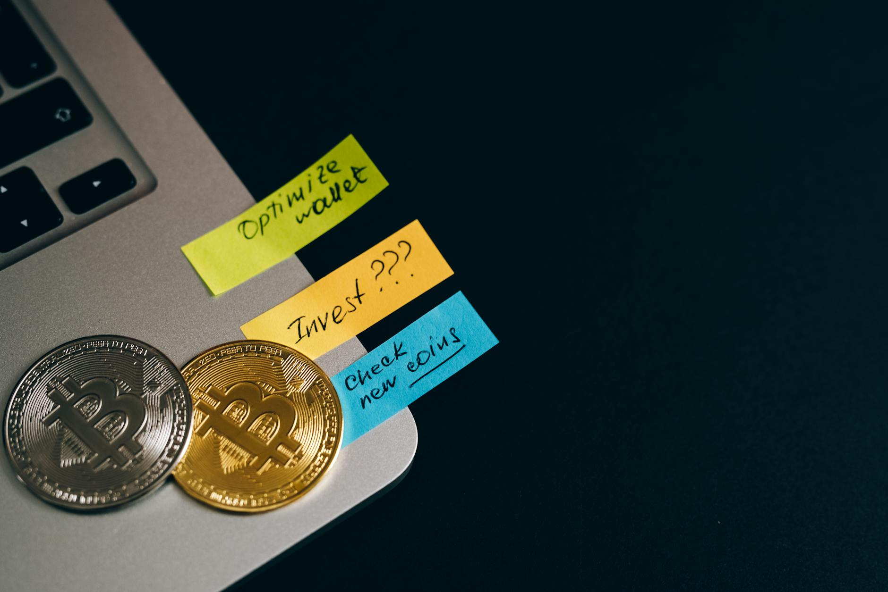
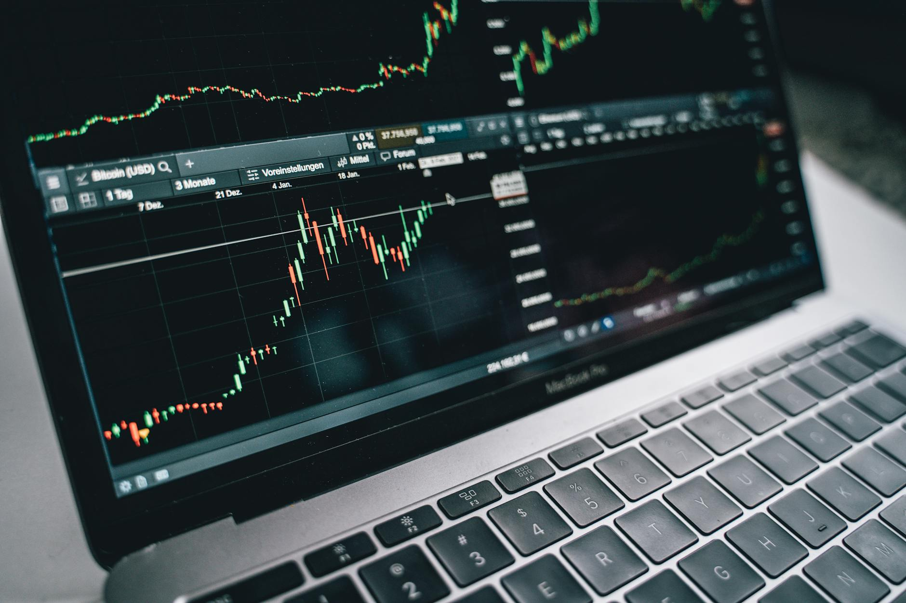

TL;DR
Use a structured monthly checklist to simplify your investing decisions. Start with a minimum of $100 in an index ETF like VTI or SCHB. Avoid common pitfalls such as tracking neglect and market timing. Choose automated tools to make investing easier.
What a Beginner Should Start With
For new investors, starting with a clear plan is crucial. Consider investing in a diversified ETF, such as the Vanguard Total Stock Market ETF (VTI), with a monthly contribution of at least $100. This manageable amount allows you to slowly build a portfolio without the risk of committing large sums. Ensure your contributions align with your financial goals, such as saving for retirement or a down payment on a home...
Misconceptions Leading Beginners to Poor Decisions

### Misconceptions Leading Beginners to Poor Decisions
Many beginners mistakenly believe that they need to pick individual stocks to succeed in investing. This common misconception often leads to anxiety about choosing 'the next big winner,' driving them to invest heavily in a single company.
For instance, consider a new investor who puts $5,000 into Tesla. If the stock price fluctuates widely due to market volatility—rising by 20% one month and dropping by 25% the next—the investor could find themselves with significant losses, especially if they panic and sell during a downturn.
In contrast, investing in a balanced ETF, such as the S&P 500 ETF, provides exposure to 500 diverse companies across various sectors. Historically, the S&P 500 has returned about 10% annually over the long term, which can significantly outperform many individual stocks when considering risk.
If the same investor had opted for an ETF instead of putting all their money into Tesla, they could have seen their investment grow more steadily, without the emotional rollercoaster associated with single stock investments.
Additionally, many beginners underestimate the importance of time in the market. Instead of trying to time their entry with individual stocks, which is notoriously difficult even for seasoned investors, focusing on a long-term investment strategy with diversified assets generally leads to more favorable outcomes.
For example, a dollar-cost averaging approach, where an investor invests a fixed amount monthly over several years, can dramatically reduce the impact of market volatility.
As a case in point, imagine a new investor starts with $1,000 in an ETF that tracks the S&P 500 and contributes an additional $100 each month. After 10 years, assuming an average annual return of 10%, their investment could grow to approximately $21,000.
In contrast, the same effort devoted to selecting individual stocks might yield unpredictable results, often leading to frustration and premature withdrawals from the markets, which can negate the potential benefits of compounding returns over time.
Such trade-offs highlight the importance of educating oneself about investing strategies and shifting the focus from short-term gains to long-term stability.
Your Monthly Investing Workflow: Step by Step

### Your Monthly Investing Workflow: Step by Step 1. Set Your Budget: Start by determining how much you can comfortably invest each month. It’s recommended to aim for at least $100 to establish a base for compounding interest over time. For instance, if you receive $2,500 per month, consider setting aside 10% for investments. 2. Allocate Funds: Once you’ve decided on your budget, think about how to distribute it among various asset classes. A common allocation could be 60% in a broad-market ETF, such as the S&P 500 index fund, and 40% in a bond fund for stability, mitigating risks. If you invest $100, that would mean $60 goes into the ETF and $40 into bonds, allowing you to balance growth with relative safety. 3. Review Performance: At the end of the month, conduct a comprehensive analysis of your investments. Check the performance metrics of your ETF and bond fund; for example, an S&P 500 ETF could increase by 5%, while your bond fund might appreciate by just 1%. Take note of any fluctuations and market trends; if the ETF drops because of a bearish economy, assess whether this affects your long-term strategy. 4. Rebalance Your Portfolio: If major shifts have occurred, such as your ETF growing to 70% of your total investment, consider rebalancing. This might involve selling a portion of the ETF and redistributing those funds into your bond fund to maintain your targeted allocation. For instance, selling $20 of your ETF to reinvest in bonds can help ensure you return to your desired risk profile. 5. Stay Informed: Commit to staying updated on market events. Set aside time each month, perhaps the first weekend, to catch up on financial news, read reports, or participate in webinars. For example, knowing when a federal interest rate hike is approaching can be essential in deciding whether to shift your allocations.
Scenario: Imagine you’re a new investor named Linda, who just started with $100 and allocates 60% to an S&P 500 ETF and 40% to a government bond fund. After three months, Linda sees the ETF appreciate 7% while the bond fund returns only 1%.
However, a report comes out indicating potential economic downturns. Linda decides to sell off $15 worth of the ETF after the last month’s review and reinvests it in bonds to safeguard her portfolio, demonstrating proactive risk management in her investment journey.
A Real Example of a Beginner Investor's Monthly Routine
### A Real Example of a Beginner Investor's Monthly Routine
Imagine an investor, Alex, who has recently embarked on their journey into the world of investing with a monthly budget of $300. In the first week, Alex allocates $180 towards a low-cost exchange-traded fund (ETF), specifically the Schwab U.S.
Broad Market ETF (SCHB). This choice allows Alex to gain exposure to a diversified range of U.S. companies, which is a great way to spread risk. By choosing a low-cost fund, Alex saves on fees, allowing more of their money to be invested.
In the second week, Alex dedicates time to researching bond funds, ultimately deciding to invest $100 into the Vanguard Total Bond Market ETF (BND). This addition offers a buffer against market volatility and a steady income stream, as bond funds typically provide regular interest payments.
Alex learns the importance of balance in their portfolio, realizing that combining stocks and bonds can help manage risk effectively.
In the third week, instead of additional investing, Alex spends time assessing the effectiveness of the current investments and explores further education resources. During this process, Alex comes across various online courses and webinars, costing around $50, which they decide to purchase to improve their financial literacy.
This investment in knowledge is seen as critical—after all, understanding market trends and investment fundamentals can guide more informed future investing decisions.
Finally, in the fourth week, Alex receives a notification about a significant market dip. Recognizing this opportunity, Alex reallocates the remaining $20 in their budget to buy shares in a specific tech stock they’ve been eyeing, believing that now might be a prime entry point. This decision underscores the necessity of being adaptable and aware of market conditions.
Through this proactive monthly routine, Alex not only invests a total of $300 but also strengthens their understanding of the investment landscape, setting a solid foundation for future financial growth. By balancing investments in ETFs, bond funds, and personal education, Alex exemplifies a strategic approach for new investors looking to maximize their monthly contributions while preparing for the long term.
Mistakes That Often Cost New Investors Money
### Mistakes That Often Cost New Investors Money
A frequent mistake is neglecting to track performance. An investor who pays no attention to their portfolio may miss potential opportunities for better returns. For example, if you invested $1,000 in Company A's stock at $50 per share and didn't monitor its performance, a drop to $30 might go unnoticed.
Without tracking, you miss the chance to sell before it drops further, leading to an overall loss of $400 if you hold on too long. Timeliness counts; if you wait too long to act, you could end up losing even more money.
Another common pitfall involves trying to time the market. Beginners often hear about price dips and rush to buy in haste, only to find they've hit a new high shortly after purchasing.
For instance, if a new investor buys into Company B at $60 per share after hearing that it just hit a low of $55, they may be too late. If the stock rallies to $75 shortly thereafter, selling it could seem tempting.
However, if they panic sell too early, say at $70, they lose out on a potentially larger profit, while also dealing with transaction fees that can eat into gains.
Consider the scenario of an investor named Sarah. She just began her investment journey and decided to put $5,000 into several tech stocks. After a month, she noticed that one of her investments, Company C, dropped 15% due to disappointing earnings reports.
Instead of selling quickly, she held on, thinking the price would rebound. Unfortunately, over the next six months, the stock continued to decline by another 25%. Had she sold immediately after the earnings report, she might have recouped about $750 instead of facing a total loss of $1,500.
This scenario underscores the importance of timely decision-making and performance tracking, as missing the signs can significantly impact an investor's financial health.
Choosing Tools and ETFs That Simplify Your Journey
### Choosing Tools and ETFs That Simplify Your Journey
To ensure simplicity, consider using automated investing platforms like Betterment or Wealthfront. These robo-advisors analyze your risk tolerance and financial goals, offering tailored investment strategies without overwhelming options. For example, Betterment charges a management fee of 0.25%, while Wealthfront has a slightly higher fee at 0.49%.
Here’s a brief comparison of three notable ETFs: 1. Vanguard Total Stock Market ETF (VTI): With an expense ratio of just 0.03%, this ETF offers broad exposure to the entire U.S. stock market and has returned an average of 10% annually over the past decade. Investing $1,000 could yield approximately $1,300 in returns after five years, assuming historical performance continues. 2. iShares Core MSCI Emerging Markets ETF (IEMG): Featuring a low expense ratio of 0.11%, this ETF targets emerging markets, which can provide high growth potential. However, it also carries higher volatility. Historically, it has returned around 8% annually. A $2,000 investment today could grow to about $2,956 in five years, assuming consistent returns, but be prepared for fluctuations in value. 3. SPDR S&P 500 ETF Trust (SPY): With a fee of 0.09%, this well-known ETF tracks the S&P 500. Over the last ten years, it has delivered an average return of 12%, meaning a $1,500 investment could potentially grow to about $2,136 after five years, again assuming market performance remains stable.
Ultimately, when choosing which tools to use, consider your investment timeline and risk tolerance. For instance, a new investor who plans to invest for retirement in 30 years can afford to take on riskier ETFs, as they have time to recover from market fluctuations.
Conversely, someone looking to buy a home in five years may want to prioritize stability and lower volatility in their investments. Understanding these factors can prevent unexpected losses and ensure a more straightforward investing experience.
FAQ
How much should I invest each month?
Starting with at least $100 is advisable, allowing for diversified investments while managing risk.
What fees should I be aware of when investing?
Keep an eye on expense ratios, trading fees, and account maintenance fees, as these can eat into returns over time.
How do I keep my investments safe during market downturns?
Consider diversifying your portfolio into various asset classes like stocks, bonds, and ETFs to mitigate risk.
What is the average return I can expect from an ETF?
While this varies, many broad-market ETFs have historically returned between 7-10% per year on average over the long term.
This article has been reviewed for practical applicability and updated with relevant information as it becomes available.
Next step
Use the article as a decision point, not just reading material. Your next system matters more than more browsing.
Search more articles
Find related tools, workflows, and guides.
Photo credits
- Photo 1: Leeloo The First via Pexels
- Photo 2: Leeloo The First via Pexels
- Photo 3: Alesia Kozik via Pexels
- Photo 4: Alesia Kozik via Pexels
- Photo 5: Joshua Mayo via Pexels